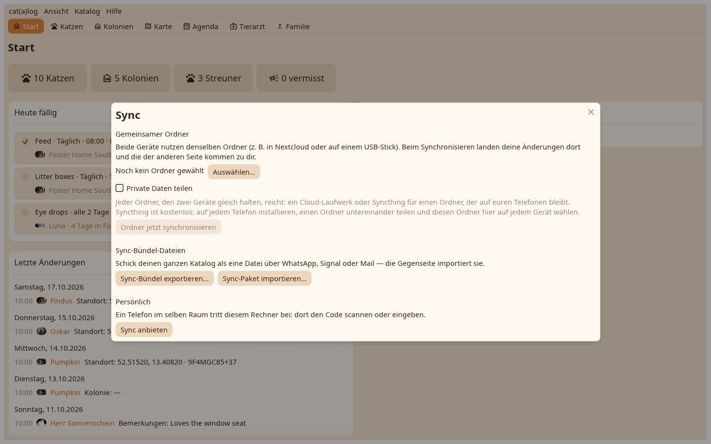

Der Schreibtisch gleicht ab wie die Telefone: über den gemeinsamen Ordner, als Bündel, oder persönlich, wo er Gastgeber ist und ein Telefon beitritt.

Wähle den Ordner einmal; von da an sagt eine Zeile oben, wessen Änderungen warten, und der Schalter führt sie von selbst zusammen. Ein Ordner, den die Telefone teilen, wird gelesen, wie er ist; der Schreibtisch schreibt seine eigenen Segmente neben ihre. Der Ordner wird beobachtet, solange die App auf dem Bildschirm ist.
Gastgeber werden zeigt den Paarcode als QR und als Text mit der PIN; ein Telefon tritt bei, wie es einem anderen Telefon beitritt. Der Schreibtisch bedient nur, solange der Dialog offen ist, über sein eigenes Zertifikat.
Bündel exportieren schreibt eine .catsync-Datei, wohin du sagst, mit oder ohne private Werte. Bündel importieren, oder ein Doppelklick auf eine .catsync-Datei, liest eines in den offenen Katalog.
Nach einer Runde listet das Ankunftsfenster, was kam, je Katze und Zuhause, mit den Konflikten darin, die zu entscheiden sind.